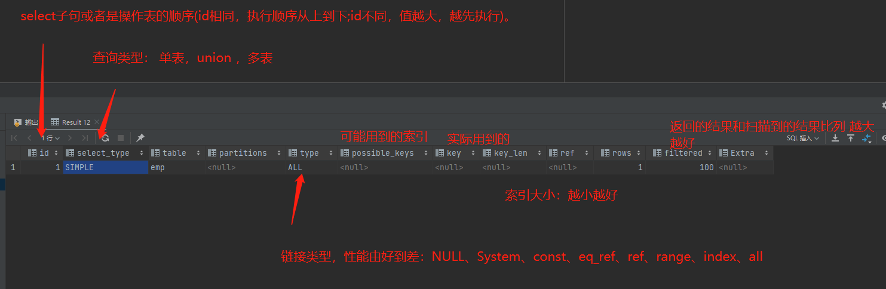

sql优化
目录
查看数据库执行频率
show global status like 'com_______';
慢查询日志
慢查询日志记录了所有执行时间超过指定参数（long_query_time ,单位秒，默认10秒）的所有sql语句的日志 mysql 慢查询 日志默认是没有开启， 需要在mysql 的配置文件（/etc/my.cnf）
# 开启mysql 慢日志查询
show_query_log=1
# 设置慢日志时间
log_query_time=2
配置完毕后， 重新启动mysql服务器，查看慢日志：/var/lib/mysql/localhost-show.log
性能分析
profiling
# 查看是否支持
select @@have_profiling;
# mysql profiling默认关闭
# 查看是否开启profiling
select @@profiling;
# 开启
set profiling=1;
# 查看每一条sql耗时的基本情况
show profiles;
# 查看指定query_id的sql语句各个阶段的耗时情况
show profile [cpu] for query query_id;
explain执行计划
查看执行计划 直接在sql命令前加上explain 或者desc 命令
explain select * from 表 where 条件

索引失效场景
- 最左前缀法则： 如果索引是联合索引，则要遵循最左前缀法则从最左列开始，并且不跳过索引中的列，如果跳跃某一列，索引将部分失效。
- 不要在索引列上进行运算操作
- 字符串不加单引号 会导致索引失效
- 头部模糊查询会导致索引失效
- or 链接条件，一侧有索引一侧无索引，会导致索引失效
注意
- 下面这个该怎样进行优化
select id ,username,pwd from user where username='test';
优化方案：
- 增加username索引： 但是会有回表查询
- 增加username ,pwd 联合索引： 这样不会回表查询
分页查询limit语句
列表第一个重点： 排序 有了排序后 ， 我们上一页和下一也就可以用到排序的字段来进行条件判断并分页
- 加入组合索引
- 更改分页逻辑